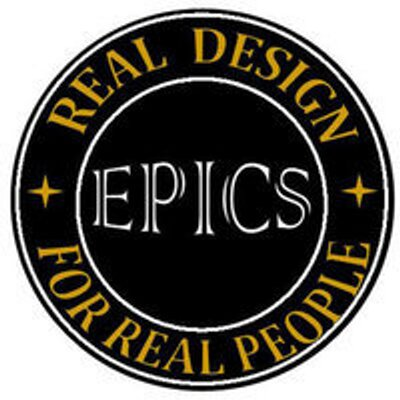

Project Overview
Led a team of six undergraduates in developing an innovative American Sign Language (ASL) translation app
as part of the EPICS (Engineering Projects in Community Service) program. This project aimed to bridge
communication gaps and improve accessibility for the deaf and hard-of-hearing community through
technology-driven solutions.
Leadership Role
- Design and Software Lead: Directed a team of six undergraduates throughout the project lifecycle
- Project Management: Coordinated team efforts, set milestones, and ensured timely delivery
- Technical Leadership: Made key architectural decisions and guided implementation strategies
- Mentorship: Provided guidance and support to team members in their respective roles
Key Achievements
- ASL Translation App: Successfully developed a complete ASL translation application
- Enhanced GUI: Updated the user interface to significantly improve usability and user experience
- Machine Learning Integration: Improved the ML model to recognize 50 different hand signs
- Community Impact: Created a tool that helps bridge communication barriers
- Team Development: Mentored and developed skills of six undergraduate team members
Technical Implementation
- Developed iOS application using Swift and Xcode development environment
- Integrated CreateML framework for machine learning model training and deployment
- Implemented computer vision algorithms for hand gesture recognition
- Created intuitive user interface optimized for accessibility
- Built robust data processing pipeline for real-time sign language recognition
Machine Learning Features
- Hand Sign Recognition: Trained model to accurately identify 50 different ASL hand signs
- Real-time Processing: Implemented efficient algorithms for live camera feed analysis
- Model Optimization: Continuously improved accuracy and performance through iterative training
- Data Augmentation: Enhanced training data diversity to improve model robustness
User Experience Improvements
- Redesigned graphical user interface for better accessibility
- Improved navigation flow and user interaction patterns
- Enhanced visual feedback for sign recognition accuracy
- Optimized app performance for smooth real-time operation
Technologies Used
Swift
iOS Development
CreateML
Xcode
Computer Vision
Machine Learning
UI/UX Design
Accessibility
Community Impact
This project was developed as part of the EPICS program, which focuses on engineering solutions for
community service. The ASL translation app directly addresses accessibility challenges faced by the
deaf and hard-of-hearing community, promoting inclusive communication and technological empowerment.
Team Collaboration
Successfully managed a diverse team of six undergraduate students, fostering collaboration,
knowledge sharing, and professional development. The project provided valuable hands-on experience
in mobile app development, machine learning, and community service engineering.